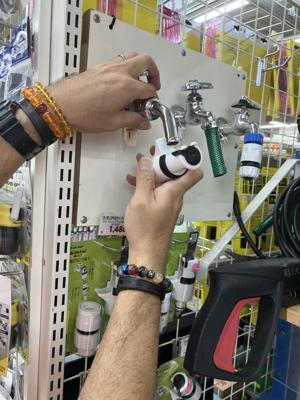
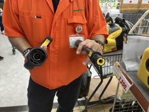
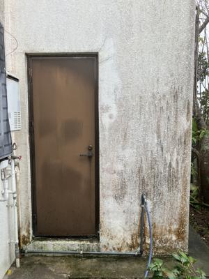
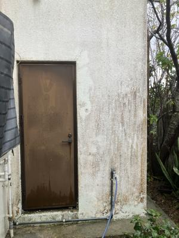

うるがいの話 ある日
最新: 高圧洗浄機のセット【うるがいの話 ある日】とは 一日だけのプログです
『うるがいの話』の最新一日だけのプログで、通信料が少なく経済的だ。カニの画像をクリックすると全ての日付が載る『うるがいの話』サイトを表示します
|
|
【うるがいの話】 うるがい(ｳﾙｶﾞｲ urugai)とは、『もずくがに』の名前でとても大きくなります。 |
|---|---|
|
|
【カミマヤーの話】 猫のことを方言でマヤーといいます。カミマヤー（kamimayaa）とは、神の猫のことです。 |
|
【たながぁの音楽】 たながぁ（ﾀﾅｶﾞｰ tanagaa）とは手長えびのことで、何種類かあり大きいのは車 エビぐらいになります。 |

|
【ぶながぁの話】 ぶながぁ(ﾌﾞﾅｶﾞｰ bunagaa)とは、赤い髪の毛、赤い身体、そして身長は１ｍ２０ｃｍ ぐらい、川の蟹を食べているの目撃された。場所は沖縄県国頭郡大宜味村のと ある村僕の隣近所に住んでいる爺さんから、聞いた話です。 |
|
|
【ギーマの話】 ギーマ(giima)とは、山原の里山に咲くスズランに似た、 花を付けます。実は食べられます、 気が付くと口の周りが紫になっています。 |
2025年12月25日 (木）高圧洗浄機のセット
18:20
洗濯機を入れ替えるため、風呂場の外回りを片づけた。裏庭の一
部を潰して２００１年８月に増築したため、ペンキが汚れている
フムフム、これはペンキ塗りをしなければならないと考えた。ペ
ンキを塗る前に、壁を洗浄しなければとメイクマンから、レンタ
ルの高圧洗浄機を借りてきた。借りるとき超簡単な説明を受けた
のだが、１蛇口と自吸用ホース、２高圧ホースを洗浄機の接続、
いずれもできないのです！！、全く。でメイクマンに接続の仕方
を教えてもらった。分かれば簡単、借りるときの説明が悪い！、
少し私が、怒った様子が分かったのか、借りたときと若い人とは
違う中年の店員が、かなり丁寧に説明してくれた。接続のリハー
サルもやった。
 
さてと、教えてもらった通り（接続の場合のホックを解除する）
にして、蛇口の栓を回し水を出すと、おっと！水が漏れている。
説明書では、水が漏れているとダメ！！と・・・、高圧ホースの
片方の口が壊れている、で、また、メイクマンへ行きました。す
ると、借りたときの若い定員さんが、口が折れて無くなっていま
す、貸すときはチャックしているので・・・・、ホー、私が壊し
たのでしょう。ま、弁償はさて置き変わりの高圧ホースを借りる
。そして、接続、蛇口の栓を開く、水漏れは無し、電源をいれ無
事洗浄を行う。５０分、頑張りました、でも、２４年の汚れはな
かなか洗浄では綺麗になりません、マ、来年ペンキを塗ります。
左が前、右が洗浄したあと、少しだけ綺麗になったかな
 
今日は、クリスマスだが。洗浄のセットが分かれば、午前中で終
了したのに、休憩なしで洗浄を終えたのは１４時半だった。返却
は明日にする。